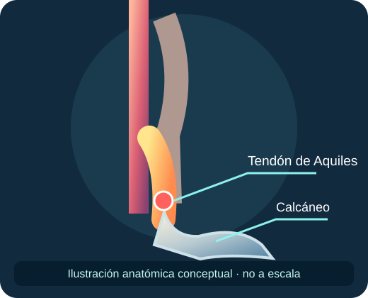
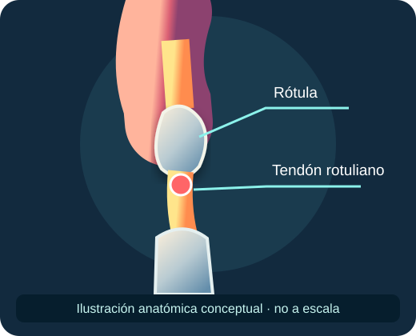
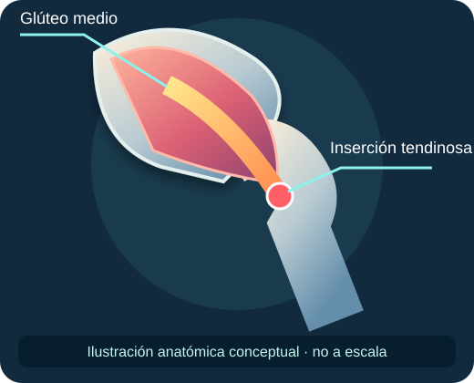

← Biblioteca gratuita
← Biblioteca gratuitaKINECHECK · RECURSO CLÍNICO GRATUITO
Tendinopatías: dolor, carga y decisiones clínicas
Una introducción práctica para evaluar, interpretar y acompañar la recuperación. Material educativo; no sustituye la valoración individual.
01 · ¿Qué llamamos tendinopatía?
El consenso ICON propone usar «tendinopatía» para describir dolor tendinoso persistente y pérdida de función relacionada con carga mecánica. La intensidad del dolor no cuantifica directamente el grado de alteración estructural.
No equiparar automáticamente engrosamiento o cambios de señal en imagen con causa del dolor.
02 · Anatomía clínica por segmento
Aquiles

Diferenciar porción media e insercional: la compresión en dorsiflexión puede importar en cuadros insercionales.
Rotuliano

Explorar tolerancia a saltos, desaceleración y tareas de almacenamiento y liberación de energía.
Glúteo

Considerar compresión lateral de cadera, posiciones mantenidas y capacidad abductora.
Ilustraciones vectoriales anatómicas orientativas, no modelos 3D ni imágenes diagnósticas.
03 · Evaluación: una secuencia útil
- Caracterizar localización, evolución, irritabilidad y relación temporal con carga.
- Identificar cambios recientes en volumen, intensidad, frecuencia y recuperación.
- Explorar tareas funcionales relevantes y comparar tolerancia y respuesta posterior.
- Valorar diagnósticos alternativos y señales de alarma según región.
- Establecer una medida basal reproducible de síntomas y función.
04 · Prescripción razonada
Capacidad
Seleccionar fuerza progresiva adaptada a irritabilidad, región, experiencia y objetivos.
Exposición
Reintroducir tareas rápidas, saltos o carrera cuando corresponda, sin imponer fases rígidas universales.
Seguimiento
Revisar síntomas durante y después de la carga, recuperación, función y tendencia semanal.
Los isométricos pueden ser una opción de ejercicio, pero no debe prometerse analgesia inmediata universal. No existe una única dosis válida para todos los tendones.
05 · Mini caso para razonar
Deportista con dolor localizado en tendón rotuliano tras aumentar saltos semanales. Pregunta clínica: ¿qué cambió en exposición y recuperación? Registrar tarea provocadora, función basal y respuesta a 24 horas; ajustar carga sin asumir que reposo absoluto es necesario.
Decisión: elegir una tarea de fuerza tolerable, medir respuesta y progresar hacia las demandas específicas del deporte según evolución.
Referencias y límites
Scott A y colaboradores. ICON 2019: International Scientific Tendinopathy Symposium Consensus: Clinical Terminology. British Journal of Sports Medicine. 2020;54:260–262. Consultar fuente.
Los esquemas y recomendaciones son una síntesis educativa, no una guía de práctica clínica validada. El contenido premium con algoritmos por región y casos extensos se desarrollará por separado; no se ofrece pago ni acceso anticipado desde esta página.